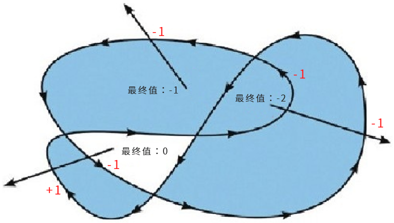
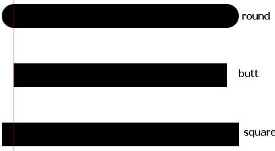
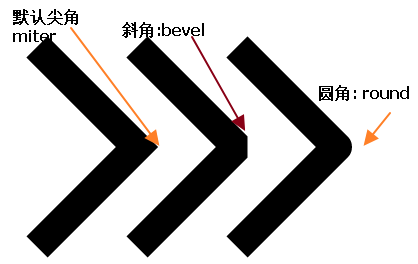
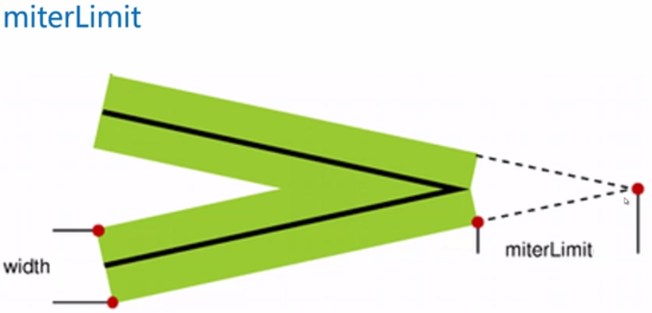

游戏：Canvas 在基于Web的图像显示方面比 Flash 更加立体、更加精巧，Canvas游戏在流畅度和跨平台方面更牛。
可视化数据（数据图表化），比如: 百度的ECharts、d3.js、three.js、highcharts
banner广告：Flash曾经辉煌的时代，智能手机还未曾出现。现在以及未来的智能机时代，HTML5技术能够在banner广告上发挥巨大作用，用Canvas实现动态的广告效果再合适不过。
未来
作用：展示绘图的内容，但不能进行绘图
xxxxxxxxxx<!--<canvas> 标签只有两个属性—— width和height。当没有设置宽度和高度的时候，canvas会初始化宽度为300像素和高度为150像素。--><canvas width="600" height="400"></canvas> xxxxxxxxxx<canvas width="600" height="400"> IE9及其以上版本的浏览器，才支持canvas标签 您的浏览器不支持canvas元素（此消息在浏览器不支持canvas元素时显示）</canvas>可以使用 html属性或DOM属性 width 和 height来设置
使用属性设置宽高，实际上是增加或减少了<canvas> 画布的像素
xxxxxxxxxx<!-- 通过html属性设置 --><canvas width="600" height="400"></canvas><!-- 通过DOM属性设置 -->var cas = document.querySelector('canvas');cas.width = 600;cas.height = 400;不要使用CSS样式来设置宽高
获取canvas元素对象
xxxxxxxxxxvar cas = document.querySelector('canvas');通过canvas拿到绘图上下文对象（一系列的API集合）
xxxxxxxxxx// canvas起初是空白的。为了展示，首先脚本需要找到渲染上下文，然后在它的上面绘制。<canvas> 元素有一个叫做 getContext() 的方法，这个方法是用来获得渲染上下文和它的绘画功能。getContext()只有一个参数，上下文的格式。var ctx = cas.getContext('2d'); // 参数'2d'是指获取到绘制平面图形的上下文console.log(ctx); // CanvasRenderingContext2Dvar ctx3D = cas.getContext('webgl'); // 绘制3D图像(部分浏览器默认不支持)console.log(ctx3D); // WebGLRenderingContext使用API绘制图形
xxxxxxxxxx// 开启新路径，beginPath 后面的 fill 和stroke 方法只对 beginPath 以后的路径起作用ctx.beginPath();// 将画笔移动到(100,100)的位置ctx.moveTo(100,100);// 从(100,100)到(200,100)画一条直线ctx.lineTo(200,100);ctx.lineTo(200,200);ctx.lineTo(100,200);ctx.closePath();// 设置描边的颜色ctx.strokeStyle = "red";// 根据路径绘制图形，路径只是草稿，真正绘制必须执行stroke()方法ctx.stroke();// 设置填充颜色ctx.fillStyle = "pink";ctx.fill();ctx.moveTo(x, y);ctx.lineTo(x, y);ctx.stroke();ctx.fill();语法：ctx.lineWidth
设置或返回当前的线条宽度。在Canvas中绘制线段，是以当前坐标为中心，向上下两边扩展绘制的。绘制的内容，最小像素为1px。
当绘制的线宽为奇数时，会分别向上下两边绘制X.5px，而Canvas能绘制的最小像素为1px，此时会向两边自动扩充，扩充的部分浅色显示。
绘制真正1px宽度的线段
xxxxxxxxxx// 从 X.5 向两端扩散,每端扩0.5 (X-->X+1)ctx.lineWidth = 1;ctx.moveTo( 100, 3.5 );ctx.lineTo( 200, 3.5 );ctx.stroke();fillStyle : 设置或返回用于填充绘画的颜色
strokeStyle: 设置或返回用于描边的颜色
xxxxxxxxxx// fillStyle 和 strokeStyle 都接受：颜色名、16进制数据、rgb值，甚至rgba. 一般先进行设置样式然后进行绘制。ctx.strokeStyle = "red";ctx.strokeStyle = "#ccc";ctx.strokeStyle = "rgb(255,0,0)";ctx.strokeStyle = "rgba(255,0,0,6)";交叉路径的填充问题：“非零环绕原则”，顺逆时针穿插次数决定是否填充。
原理：
xxxxxxxxxx“非零环绕规则”是这么来判断有自我交叉情况的路径的：1. 对于路径中的任意给定区域，从该区域内部画一条足够长的线段，使此线段的终点完全落在路径范围之外2. 将计数器初始化为03. 每当这条线段与路径上的直线或曲线相交时4. 改变计数器的值：如果是与路径的顺时针部分相交，则加1；如果是与路径的逆时针部分相交，则减1。5. 若计数器的最终值不是0，那么此区域就在路径里面，调用fill()方法时，浏览器就会对其进行填充。6. 如果最终值是0，那么此区域就不在路径内部，浏览器也就不会对其进行填充了。
ctx.beginPath();ctx.closePath();设置线条端点(线头、线冒)样式：lineCap

设置拐角类型：lineJoin

设置或返回最大斜接长度：miterLimit

ctx.rect(x, y, width, height);语法：ctx.strokeRect(x, y, width, height);
语法：ctx.fillRect(x, y, width, height);
ctx.clearRect(x, y, width, hegiht);ctx.clearRect(0, 0, cas.width, cas.height);语法：ctx.arc(x, y, r, sAngle, eAngle, counterclockwise);
参数详解：
xxxxxxxxxxfunction toRadian(angle) { return angle / 180 * Math.PI;}function toAngle(radian) { return radian / Math.PI * 180;}设置或返回文本内容的当前字体属性
xxxxxxxxxxctx.font = 'font-style font-weight font-size/line-height font-family';设置或返回文本内容的当前对齐方式
xxxxxxxxxxctx.textAlign = 'param';// start : 默认。文本在指定的位置开始// end : 文本在指定的位置结束// center: 文本的中心被放置在指定的位置// left : 文本左对齐// right : 文本右对齐设置或返回在绘制文本时使用的当前文本基线
xxxxxxxxxxctx.textBaseline = 'param';// alphabetic ： 默认。文本基线是普通的字母基线// top ： 文本基线是 em 方框的顶端// hanging ： 文本基线是悬挂基线// middle ： 文本基线是 em 方框的正中// ideographic： 文本基线是 em 基线// bottom ： 文本基线是 em 方框的底端语法
xxxxxxxxxxctx.drawImage(img, x, y);// img ：图片dom对象// x,y：绘制图片到画布中的坐标语法：
xxxxxxxxxxctx.drawImage(img, x, y, width, height);// width：绘制到canvas中展示的宽度// 如果指定宽高，最好成比例，不然图片会被拉伸// height = imgHeight / imgWidth * width;(设置高 = 原高度 / 原宽度 * 设置宽;)语法：
xxxxxxxxxxctx.drawImage(img, imgX, imgY, sWidth, sHeight, x, y, width, height);// imgX, imgY：被剪裁图片的起始位置, 图片中的x,y坐标// sWidth：裁剪宽度，sHeight：裁剪高度// x, y：要绘制到画布上的位置// width ：要绘制到画布上的宽度// height：要绘制到画布上的高度方式一：
xxxxxxxxxxvar img = document.createElement("img");方式二：
xxxxxxxxxxvar img = new Image(); //这个就是 img 标签的 dom 对象img.src = "imgs/arc.gif";img.alt = "文本信息";img.onload = function() { // 绘制图片（必须等待图片加载完成）}语法：
xxxxxxxxxxctx.translate(x,y);// x：整个坐标轴位移到原来水平坐标x上的值// y：整个坐标轴位移到原来垂直坐标y上的值发生位移后，相当于把画布的(0,0)坐标 更换到新的(x,y)的位置，所有绘制的新元素都会被影响，位移画布一般配合缩放和旋转等。
语法：
xxxxxxxxxxctx.scale(scalewidth,scaleheight);// scalewidth：缩放当前绘图的宽度 (1=100%, 0.5=50%, 2=200%)// scaleheight：缩放当前绘图的高度 (1=100%, 0.5=50%, 2=200%)注意：缩放的是整个画布，缩放后，继续绘制的图形会被放大或缩小。
语法：
xxxxxxxxxx// 旋转当前的坐标轴，注意参数是弧度（PI）ctx.rotate(radian);Canvas 中引入了状态的保持机制，使用 ctx.save()方法可以保存当前状态。如果需要恢复到已经保存的状态, 只需要调用 ctx.restore() 方法即可。状态保持的机制是基于状态栈实现的，也就是说 save 一次就存储一个状态，restore 一次就将刚刚存入的状态恢复。如果 save 两次，就需要 restore 两次，才可以恢复到最先的状态。一般在封装绘图的时候都会在开始绘制之前，save 一次，然后开启一个新路径 beginPath，然后在绘制结束后 restore，这样保持当前状态不会对其他绘图代码构成影响。
ctx.save();ctx.restore();语法：
xxxxxxxxxxcas.toDataURL(type, encoderOptions);// e.g cas.toDataURL("image/png",1);// type：设置输出的类型，如 image/png、image/jpeg等// encoderOptions： 0-1之间的数字，用于标识输出图片的质量，1表示无损压缩(可选)var cas = document.querySelector("canvas");var dataURL = cas.toDataURL("image/png",1);console.log(dataURL);//"data:image/png;base64,iVBORw0KGgoAAAANSUhEUgAAAAUAAAAFCAYAAACNbyblAAAADElEQVQImWNgoBMAAABpAAFEI8ARAAAAAElFTkSuQmCC"var img = document.querySelector("img");img.src = dataURL;